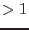

For an input list of eboxdetect source locations, simultaneous maximum likelihood PSF fits to the source count distribution are performed in all energy bands of each EPIC instrument. A description of the main properties of the detection algorithm may be found in Cruddace, Hasinger, Schmitt (1988) and an overview of emldetect and its use in the XMM-Newton catalogue pipelines at http://xmmssc-www.star.le.ac.uk/Catalogue/2XMM/UserGuide_xmmcat.html#EmldetFit.
Input images. Input images per instrument and energy band plus the corresponding exposure images, background images, and detection masks are supplied as lists of file names. The task is designed for a maximum of five energy bands and three EPIC instruments. It is technically possible to run eboxdetect for up to six energy bands, but users are encouraged not to use more than five because of the low count numbers in narrow-band images. All input images and accompanying exposure images, background images, and detection masks must have identical orientation and binning and must be supplied in a consistent order.
Fit parameters. Main free fit parameters are: the source location (image coordinates X_IMA, Y_IMA), source extent (Gaussian sigma or beta model core radius), and source count rates in each energy band for each telescope. The source location and source extent are constrained to the same best-fit value in all energy bands per EPIC instrument whereas the source count rates are adjusted to their individual best-fit value in each energy band per EPIC instrument. Derived parameters are: total source count rate, likelihood of detection (all-EPIC and in each energy band), likelihood of source extent, and up to four hardness ratios (default: four).
Output source table.
A summary of all the columns in the output source list can be found in
Table 2 in
Section 8 on the output files. For
each detected source, the table contains one row for each energy band for
each instrument. The individual source rows are identified through the
column entries ID_INST and ID_BAND in the output
table. ID_INST refers to the EPIC instrument (: PN, : MOS1,
: MOS2,  : summary row). ID_BAND is the energy band number as
defined by the ordering of the energy bands, i.e.: the ordering of the input
images given as command-line arguments to emldetect. The upper and
lower bounds of each energy band are available in the header
keywords aa_n_ELO and aa_n_EHI where aa
stands for the EPIC camera (PN, M1, or M2) and n stands for the energy
band number as given in the table column ID_BAND. Additional
keywords N_INST and aa_BNDS specify the number of EPIC
cameras and the number of energy bands for each EPIC camera. For the
definition of the basic energy bands used in the pipeline processing,
see
: summary row). ID_BAND is the energy band number as
defined by the ordering of the energy bands, i.e.: the ordering of the input
images given as command-line arguments to emldetect. The upper and
lower bounds of each energy band are available in the header
keywords aa_n_ELO and aa_n_EHI where aa
stands for the EPIC camera (PN, M1, or M2) and n stands for the energy
band number as given in the table column ID_BAND. Additional
keywords N_INST and aa_BNDS specify the number of EPIC
cameras and the number of energy bands for each EPIC camera. For the
definition of the basic energy bands used in the pipeline processing,
see
http://xmmssc-www.star.le.ac.uk/Catalogue/3XMM-DR4/UserGuide_xmmcat.html#TabBands.
An ID_BAND value of  refers to the summary rows of each source,
which list combined results per instrument and in total. The summary rows
over the energy bands for each instrument contain sums of the entries in the
individual energy bands where appropriate (counts, count rates, fluxes, and
detection likelihoods). In the EPIC summary row per source
with ID_INST=0, those spatial parameters are repeated that are
identical for all energy bands (positions and extent values). The other
columns are set to NULL.
refers to the summary rows of each source,
which list combined results per instrument and in total. The summary rows
over the energy bands for each instrument contain sums of the entries in the
individual energy bands where appropriate (counts, count rates, fluxes, and
detection likelihoods). In the EPIC summary row per source
with ID_INST=0, those spatial parameters are repeated that are
identical for all energy bands (positions and extent values). The other
columns are set to NULL.
PSF fitting.
Simultaneous fitting of data from different instruments (i.e., EPIC pn and
MOS data) or different exposures is supported. The PSF fitting may either
be performed in single-source or in multi-source mode. In multi-source mode,
neighbouring sources with overlapping PSFs are fitted
simultaneously. Detection likelihoods are optimized for all the overlapping
sources simultaneously, and detection likelihoods per source are calculated
and written to the column DET_ML of the output source
table. Selection of sources for simultaneous fitting is controlled by the
distance parameter scut and by the parameter nmaxfit that
gives the maximum number of sources to be fit simultaneously
( nmaxfit
nmaxfit  ). Sources fit simultaneously are
identified in the output table through the ID_CLUSTER table
column. It is also possible to fit several PSFs for each input source
position by setting the parameter nmulsou to the corresponding value
(
). Sources fit simultaneously are
identified in the output table through the ID_CLUSTER table
column. It is also possible to fit several PSFs for each input source
position by setting the parameter nmulsou to the corresponding value
( nmulsou
nmulsou  , nmaxfitnmulsou
, nmaxfitnmulsou  ).
).
Two parameters determine the image region on which a source fit is performed: The parameter ecut determines the size of the subimage around each source used for fitting. The parameter scut determines the radius around each source, in which other input sources are considered for multi-PSF fitting, if the parameter nmulsou is . Both ecut and scut are given as encircled energy fractions of the calibration PSF. The actual radii in pixel units therefore change slightly with energy band and source position. Alternatively, ecut and scut can be given as a fixed value in units of image pixels (if ecut or scut is ). The actual value for the cutout radius of each source is listed in the column CUTRAD of the output source list.
Starting with SAS 10.0 and emldetect version 5.1, a full 2d parametrization of the EPIC PSF as a function of instrument, energy, and off-axis angle is introduced (Release Notes). The PSF model can be chosen via the parameter psfmodel. Up to version 5.17.1, the medium-accuracy PSF (psfmodel=medium) is used by default. The analytical 2d PSF (psfmodel=ellbeta) is the default PSF model from version 5.17.2 on. The slew-mode PSF for EPIC/pn (psfmodel=slew) has been introduced with emldetect-6.0 and cal-3.231.
Extent fitting.
If the parameter fitextent is set to ``yes'', the point spread
function will be convolved with a source extent model, that can be set to
either a Gaussian profile or a  -model profile via the
parameter extentmodel. In the case of extentmodel=beta, the
surface brightness is calculated as
-model profile via the
parameter extentmodel. In the case of extentmodel=beta, the
surface brightness is calculated as

The value of the core radius is written to the column EXT of
the output source list. In the case of a Gaussian extent model,  is
written to the column EXT, instead. Note that the source extent can
only be determined reliably for relatively bright objects. If the likelihood
of the source extent falls below the threshold given via dmlextmin
(default: ), point source parameters are derived.
is
written to the column EXT, instead. Note that the source extent can
only be determined reliably for relatively bright objects. If the likelihood
of the source extent falls below the threshold given via dmlextmin
(default: ), point source parameters are derived.
From version 4.27 on, the extent likelihood values (EXT_ML) are corrected for the number of input images with the formalism described below in the paragraph on Detection likelihoods.
From version 4.32 on, the maximum value of the extent fit parameter can be given via the task parameter maxextent. The unit is image pixels. Large values of maxextent can lead to spurious detection of extended sources in some cases. With the parameter minextent, the minimum extent can be specified that is still considered to be significant. If the best fit extent is less than minextent, a point source model will be adopted for the source.
Detection likelihoods. All detection likelihoods are transformed to equivalent likelihoods (column DET_ML of the output source table), corresponding to the case of two free parameters to allow comparison between detection runs with different numbers of free parameters (i.e., when different numbers of input images are used):

where  is the incomplete Gamma function,
is the incomplete Gamma function,  is the number of energy
bands involved,
is the number of energy
bands involved,  is the number of degrees of freedom of the fit ( if the task parameter fitextent is true and the extent
likelihood of the detection is larger than zero, and otherwise),
and with
is the number of degrees of freedom of the fit ( if the task parameter fitextent is true and the extent
likelihood of the detection is larger than zero, and otherwise),
and with  as defined by Cash (1979).
as defined by Cash (1979).  is 1 for the
individual energy-band detection likelihoods of a single observation that
are listed in source table rows with ID_BAND 0, and
is 1 for the
individual energy-band detection likelihoods of a single observation that
are listed in source table rows with ID_BAND 0, and  is
equal to the total number of energy bands in the ID_BAND=0 summary
rows. The equivalent detection likelihoods obey the simple relationship
, where is the probability for a random Poissonian
fluctuation to have caused the observed source counts.Note that for very small numbers of source counts (less than
counts, Cash 1979), this relation has to be treated with caution.
Therefore, it will only give a rough estimate of the number of expected
spurious sources.
is
equal to the total number of energy bands in the ID_BAND=0 summary
rows. The equivalent detection likelihoods obey the simple relationship
, where is the probability for a random Poissonian
fluctuation to have caused the observed source counts.Note that for very small numbers of source counts (less than
counts, Cash 1979), this relation has to be treated with caution.
Therefore, it will only give a rough estimate of the number of expected
spurious sources.
| Pipeline energy bands [keV] | |||
| 1 | 1 | 2 | 0.2 - 0.5 0.5 - 1.0 |
| 2 | 2 | 3 | 0.5 - 1.0 1.0 - 2.0 |
| 3 | 3 | 4 | 1.0 - 2.0 2.0 - 4.5 |
| 4 | 4 | 5 | 2.0 - 4.5 4.5 - 12.0 |
Hardness ratios. If detection over several energy bands is performed, up to four hardness ratios HRi are calculated from the source count rates in the individual bands (default: four). The hardness ratios are defined as follows:
where  denotes the count rates in energy bands
denotes the count rates in energy bands  and
and  , respectively.
The energy bands
, respectively.
The energy bands  and
and  used to calculate the hardness ratios can be
specified for each instrument via the
parameters hrpndef, hrm1def, and hrm2def. The
default band assignments (identical for all instruments) are given in
Table 1. The band numbers
used to calculate the hardness ratios can be
specified for each instrument via the
parameters hrpndef, hrm1def, and hrm2def. The
default band assignments (identical for all instruments) are given in
Table 1. The band numbers  and
and  are
assigned to the individual bands by numbering the corresponding input images
in the order in which they are given on the command line. It is therefore
important that the ordering of the input images is consistent with the
contents of hrdef to obtain meaningful hardness ratios.
are
assigned to the individual bands by numbering the corresponding input images
in the order in which they are given on the command line. It is therefore
important that the ordering of the input images is consistent with the
contents of hrdef to obtain meaningful hardness ratios.
Fluxes and energy conversion factors. EPIC count rates and errors are converted to fluxes and flux errors by means of energy conversion factors (ECF = count rate / flux), given in units of 1e11 ctscmcm/erg via the parameter ecf per image, i.e. per camera and per energy band. Fluxes and flux errors per instrument in the output source list are the sum of the values for each energy band. All-EPIC fluxes are error-weighted means. The parameter ecf defaults to 1.0, which means that the default output fluxes of emldetect are not true source fluxes. Users need to supply appropriate energy conversion factors for their input images, depending on the instrumental setup - camera, filter, response -, the event selection expression - in particular: patterns and energy band -, and the assumed spectral shape of the sources. New ECFs were derived for the 3XMM catalogue, are listed at http://xmmssc-www.star.le.ac.uk/Catalogue/3XMM-DR4/UserGuide_xmmcat.html#TabNewECFs, and can be adopted for input images obtained with the same setup as described in the 3XMM documentation. In general, ECFs are estimated from spectral analyses of large source samples (or single sources), fitting or assuming a spectral shape and calculating count rates and fluxes for a given response e.g. within xspec. For the method, see Mateos et al. (2009), Section 3.5 of Rosen et al. (2016), and the technical note http://xmmssc-www.star.le.ac.uk/Catalogue/2XMM/CAL-TN-0023-v2.0.ps, and for examples the section ``EPIC flux to count rate conversion'' of the XMM-Newton Users Handbook at http://xmm.esac.esa.int/external/xmm_user_support/documentation/uhb/epicfluxtocr.html.
OOT correction.
All EPIC PN source count rates and fluxes written to the emldetect
source list are corrected for photons that arrive during readout of the PN
CCDs and therefore are not detected on the nominal source position
(out-of-time events).
emldetect v4.5 to 4.27: Correction factors of 1.0626 for
PrimeFullWindow mode and of 1.0223 for the PrimeFullWindowExtended mode are
applied by emldetect. Data taken in other observing modes are left
uncorrected.
emldetect v4.28 onwards: From eexpmap
v3.31 on, the
OOT events correction is applied to the exposure maps in all observing
modes. emldetect
reads the keyword OOTCORR from the FITS header of
the exposure maps. If OOTCORR is existing and set to ``true'', no further
correction is applied by emldetect.
CPU saving. Since both multi-PSF fitting and extent fitting are CPU intensive, two methods exist to reduce the CPU requirements of an emldetect run using multi-PSF fitting. With the option withthreshold, the user can limit the application of multi-PSF fitting (as specified by nmulsou) to sources exceeding a certain threshold. The threshold is set by the parameter threshold. The corresponding input column is defined via the parameter threshcolumn, which can be LIKE, SCTS, or RATE.
The second method to save CPU time for combined extent and multi-PSF fitting is provided by the option withtwostage, which is used in combination with fitextent=''true'' and nmulsou . If withtwostage is set to ``true'', emldetect will perform the fit for each source in two stages: In the first stage, one extended source is fitted to the source. Only if the extent is significant, the second stage will be performed, and a multi-PSF fit with one extended source and nmulsou - 1 point sources is applied. The withtwostage option avoids misidentification of close pairs of point sources as extended sources in most cases and significantly reduces CPU time.
Position errors. The final stage of the source detection process
is done via ML-fitting of the PSF-shape at the given detector position to
the observed photon distribution utilizing the  -statistics. The best
fitting X-ray position is determined at the minimum value of
-statistics. The best
fitting X-ray position is determined at the minimum value of  , and the
errors in right ascension and declination are derived at
. The two-dimensional positional error RADEC_ERR,
written to the output source list, is calculated as square root of the
quadratic sum of the errors in R.A. and Dec.It translates into a one-dimensional
, and the
errors in right ascension and declination are derived at
. The two-dimensional positional error RADEC_ERR,
written to the output source list, is calculated as square root of the
quadratic sum of the errors in R.A. and Dec.It translates into a one-dimensional  RADEC_ERR, if
symmetric errors in R.A. and Dec are assumed. Individual position errors in
image coordinates can be accessed via the X_IMA_ERR and Y_IMA_ERR
columns in the output source list.
RADEC_ERR, if
symmetric errors in R.A. and Dec are assumed. Individual position errors in
image coordinates can be accessed via the X_IMA_ERR and Y_IMA_ERR
columns in the output source list.
XID band. The XID energy band (0.5 - 4.5 keV) of the X-ray Follow-up & Identification Programme is marked by ID_BAND=9 and will be present if the input parameter withxidband has been set to true. The keyword XID_BND indicates whether XID band information is present in the source table. Note that the energy bands which constitute the XID band have to be specified for each instrument separately using the parameters xidpndef, xidm1def, xidm2def. Default values are the input bands , , and , as defined in ID_BAND column.
From v4.42.5 on, an alternative method to treat the XID band has been introduced: With the parameter xidfixed set, emldetect can be run on one XID band image per instrument using an emldetect output list as input source list. Positions and source extent values will be kept fixed, and only fluxes and detection likelihoods are determined. In this case, the input images (science images, exposure maps, background images) for the desired band (e.g. 0.5 - 4.5 keV) have to be prepared beforehand. The parameters xidpndef, xidm1def, xidm2def determine which energy bands from the input source list are used to provide the start values for the fit. Note that when using this method, the parameter withxidband should be set to ``no'', and the parameter ecf is used to set the energy conversion factors (see paragraph on ECFs).
Mosaic images. From version 5.0 onward, the parameter imagebuffersize is implemented. The main purpose of this parameter isto make the processing of mosaic-pointings more efficient, where the mosaicked sky image will contain large areas without photon data. The value of imagebuffersize characterizes the memory that is allocated for each individual image and is given in image pixels: imagebuffersize is (at least) the size of the sub-image per pointing that contains non-zero pixels (Fig. 1). Its default is , which is the side length of a typical pipeline-produced EPIC image with a bin size of arcsec.